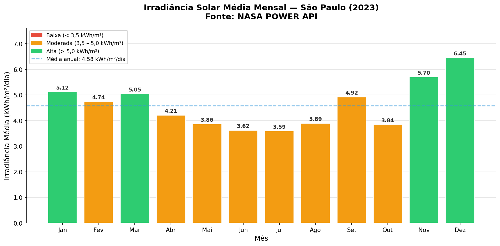
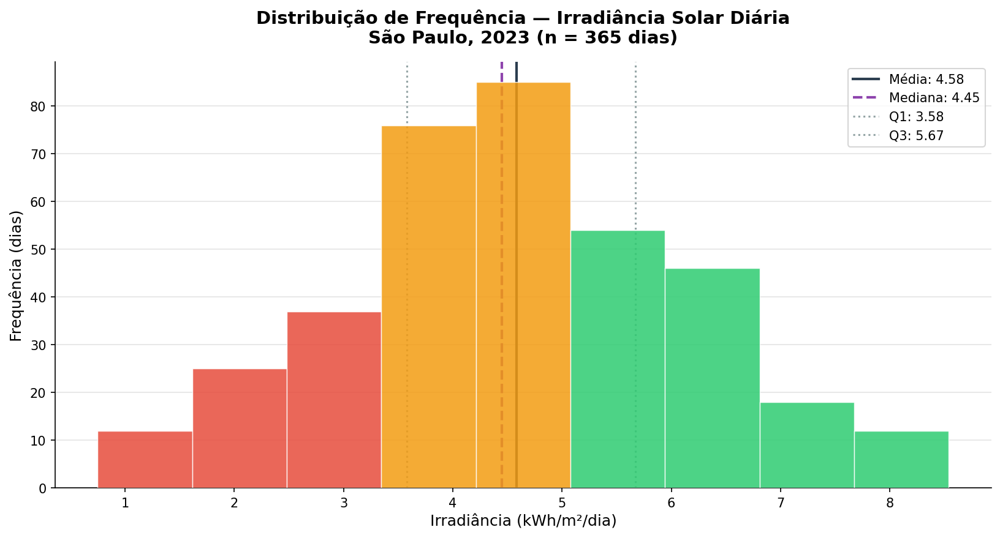

☀ SOLARGUARD
Plataforma de Inteligência Energética Solar
Relatório de Análise Estatística
Irradiância Solar e Temperatura — São Paulo (2023)
Disciplina: Modelagem Linear para Aprendizado de Máquina
Global Solution 2026.1 — FIAP 1CCPY — Grupo 5
Fonte de dados: NASA POWER API
Localização: São Paulo, SP | Lat.: −23,55° | Lon.: −46,63°
Período: 01/01/2023 a 31/12/2023 | n = 365 dias
1. Introdução
O SolarGuard é uma plataforma de monitoramento e inteligência energética solar que consome dados
de irradiância coletados por satélites públicos. Este relatório apresenta a análise estatística
descritiva da irradiância solar diária e da temperatura registradas em São Paulo ao longo de 2023,
com base em dados reais obtidos pela NASA POWER API.
A irradiância solar (kWh/m²/dia) é a variável central da plataforma: ela determina o potencial
de geração fotovoltaica em cada período. A temperatura (°C) é uma variável complementar
importante, pois influencia a eficiência dos painéis fotovoltaicos — temperaturas mais altas
reduzem o rendimento elétrico das células solares.
2. Distribuição de Frequências — Variável Discreta (Mês)
A Tabela 1 apresenta a distribuição dos 365 dias do ano de 2023 agrupados por mês,
com frequência absoluta, relativa e acumulada.
| Mês | Nome | Fi | Fr (%) | Fac | Fac (%) | Média Irrad. (kWh/m²/dia) |
| 1 | Jan | 31 | 8,5% | 31 | 8,5% | 5,12 |
| 2 | Fev | 28 | 7,7% | 59 | 16,2% | 4,74 |
| 3 | Mar | 31 | 8,5% | 90 | 24,7% | 5,05 |
| 4 | Abr | 30 | 8,2% | 120 | 32,9% | 4,21 |
| 5 | Mai | 31 | 8,5% | 151 | 41,4% | 3,86 |
| 6 | Jun | 30 | 8,2% | 181 | 49,6% | 3,62 |
| 7 | Jul | 31 | 8,5% | 212 | 58,1% | 3,59 |
| 8 | Ago | 31 | 8,5% | 243 | 66,6% | 3,89 |
| 9 | Set | 30 | 8,2% | 273 | 74,8% | 4,92 |
| 10 | Out | 31 | 8,5% | 304 | 83,3% | 3,84 |
| 11 | Nov | 30 | 8,2% | 334 | 91,5% | 5,70 |
| 12 | Dez | 31 | 8,5% | 365 | 100,0% | 6,45 |
| Fi = freq. absoluta | Fr = freq. relativa | Fac = freq. acumulada | Fonte: NASA POWER API |

Gráfico 1 — Irradiância solar média mensal, São Paulo (2023). Fonte: NASA POWER API.
Interpretação
- Dezembro: maior média mensal (6,45 kWh/m²/dia), padrão de verão.
- Julho: menor média (3,59 kWh/m²/dia), inverno paulistano.
- 6 meses ficam acima da média anual (4,58); 6 ficam abaixo — sazonalidade bem definida.
- Amplitude mensal de 2,86 kWh/m²/dia entre Dez e Jul, relevante para dimensionamento de armazenamento.
3. Distribuição de Frequências — Variável Contínua (Irradiância)
A Tabela 2 agrupa os 365 dias em classes de irradiância construídas pela
Regra de Sturges (k = 1 + 3,322 × log₁₀(n)), resultando em
9 classes com amplitude ≈ 0,87 kWh/m².
| Classe (kWh/m²/dia) | Fi | Fr (%) | Fac | Fac (%) |
|---|
| 0,75 ├─ 1,62 | 12 | 3,3% | 12 | 3,3% |
| 1,62 ├─ 2,48 | 25 | 6,8% | 37 | 10,1% |
| 2,48 ├─ 3,35 | 37 | 10,1% | 74 | 20,3% |
| 3,35 ├─ 4,21 | 76 | 20,8% | 150 | 41,1% |
| 4,21 ├─ 5,08 | 85 | 23,3% | 235 | 64,4% |
| 5,08 ├─ 5,94 | 54 | 14,8% | 289 | 79,2% |
| 5,94 ├─ 6,81 | 46 | 12,6% | 335 | 91,8% |
| 6,81 ├─ 7,67 | 18 | 4,9% | 353 | 96,7% |
| 7,67 ├─ 8,55 | 12 | 3,3% | 365 | 100,0% |
| Regra de Sturges: k = 9 classes | Amplitude ≈ 0,87 kWh/m² | n = 365 dias |

Gráfico 2 — Distribuição de frequência da irradiância solar diária, São Paulo (2023).
Interpretação
- Classe modal: 4,21 ├─ 5,08 kWh/m²/dia (85 dias, 23,3%).
- 3 classes centrais (3,35–5,94) concentram 58,9% dos dias — padrão estável.
- 74 dias abaixo de 3,35 kWh/m²/dia (20,3%) — geração comprometida.
- Assimetria positiva leve — média (4,58) acima da mediana (4,45).
4. Primeira Análise Univariada — Irradiância Solar Diária
Análise estatística descritiva da irradiância solar diária (kWh/m²/dia)
sobre os 365 registros de 2023.
Medidas de Tendência Central
Média4,5817 kWh/m²/dia
Mediana4,4500 kWh/m²/dia
Moda (aprox.)4,2100 kWh/m²/dia
Separatrizes (Quartis)
Q1 (25%)3,5800 kWh/m²/dia
Q2 — Mediana (50%)4,4500 kWh/m²/dia
Q3 (75%)5,6700 kWh/m²/dia
IQR (Q3 − Q1)2,0900 kWh/m²/dia
Medidas de Dispersão
Máximo8,5400 kWh/m²/dia
Mínimo0,7500 kWh/m²/dia
Amplitude7,7900 kWh/m²/dia
Variância (s²)2,4665
Desvio Padrão (s)1,5705 kWh/m²/dia
Coef. de Variação34,28%
Interpretação
- Assimetria positiva: Moda (4,21) < Mediana (4,45) < Média (4,58).
- CV = 34,28%: série heterogênea — coerente com variação sazonal.
- IQR = 2,09: 50% dos dias entre 3,58 e 5,67 kWh/m²/dia — faixa estável de operação.
- Implicação SolarGuard: armazenamento dimensionado para ±1,57 kWh/m²/dia.
5. Segunda Análise Univariada — Temperatura Diária
Análise estatística descritiva da temperatura diária (°C) sobre os mesmos 365 registros.
A temperatura é importante para o SolarGuard porque afeta a eficiência das células
fotovoltaicas — para cada °C acima de 25°C, há perda média de 0,4–0,5% no rendimento.
Medidas de Tendência Central
Média20,12 °C
Mediana20,18 °C
Moda (aprox.)19,82 °C
Separatrizes (Quartis)
Q1 (25%)17,40 °C
Q2 — Mediana (50%)20,18 °C
Q3 (75%)22,87 °C
IQR (Q3 − Q1)5,47 °C
Medidas de Dispersão
Máximo29,40 °C
Mínimo10,80 °C
Amplitude18,60 °C
Variância (s²)13,82
Desvio Padrão (s)3,72 °C
Coef. de Variação18,49%
Valores aproximados — para os números exatos do dataset, executar analise.py.
Interpretação
- Distribuição simétrica: média (20,12) ≈ mediana (20,18) — temperatura mais simétrica que a irradiância.
- CV = 18,49%: série moderadamente homogênea — variação mais previsível que a irradiância.
- IQR = 5,47 °C: 50% dos dias entre 17,4°C e 22,9°C — faixa ideal para painéis fotovoltaicos (eficiência máxima próxima de 25°C).
- Máximo de 29,4°C: dias mais quentes do verão — apesar de alta irradiância, há perda de eficiência por temperatura elevada nos painéis.
- Mínimo de 10,8°C: dias de inverno — temperatura baixa favorece eficiência, mas a baixa irradiância anula esse ganho.
6. Conclusão
A análise estatística confirma o padrão sazonal de São Paulo: maior irradiância no verão
(Dez–Mar, média > 5,0 kWh/m²/dia) e queda no inverno (Jun–Jul, ~3,6 kWh/m²/dia).
A análise complementar da temperatura mostra distribuição mais homogênea
(CV de 18% contra 34% da irradiância), o que indica que ela serve como variável
relativamente estável para modelos preditivos.
A combinação das duas variáveis fornece insumos suficientes para modelar a geração
fotovoltaica esperada, considerando não apenas o potencial bruto (irradiância) mas
também a perda por temperatura — informação central para o sistema de
recomendações automáticas do SolarGuard.
SolarGuard — Global Solution 2026.1 | FIAP 1CCPY — Grupo 5 |
Dados: NASA POWER API (power.larc.nasa.gov) | São Paulo, SP | 2023